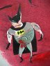
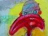

The proposal to hold an exhibition of this private archive, began with a brief glimpse of a handful of these images that Ian Pollock revealed at an AOI (Association of Illustrators) seminar held in Hull in April 1998. From this fleeting encounter came the possibility of a millennium exhibition at the EICH Gallery. Eight images still had to be tackled to complete the series, these have been completed during the course of 1998 and Spring 1999.
Thanks to support from Yorkshire Arts, The European Illustration Collection Hull, and the University of Lincolnshire and Humberside the exhibition ran from 1 November 1999 to 14 January 2000. An on-line catalogue of all 76 images continues to make the works available for interested audiences far beyond the duration of the exhibition itself.
In many ways they are less 'pictures' than 'stories'. They should be read rather than approached as finished compositions. Time spent in scrutinising is the necessary entry into the curious and charged worlds they depict. The lusciousness of the detail, paradoxically often reflecting a visceral and raw encounter, is totally seductive on-screen. Entering Ian Pollock's world is a case of putting on a snorkel and exploring the coral reef. Magically, fragments of Morocco and Iceland jostle with everyday objects - battle ships, longboats and planes populate sea and sky-scapes already home to assorted fish, fowl, swine and creatures that by-passed the ark.
Ian is interested in clouds and amateur conjuring; he lived on a flight-path as a boy; witnessed A10 tank busters in Gulf War practice over Derbyshire; his studio stores a skull and skeleton, African art and jackdaw files full of chosen oddities. Perhaps it does add something to know a little of what personal experiences and political events collided with expedient objects and scenarios to determine the mix, but it is emphatically not the answer to go 'pinning-down' meanings. This is an 'Alice World' - a visual thesaurus with rational and irrational in happy coincidence. You must go with the shape and place changes it offers..... The original pictures on the gallery walls are unique works, but their web counterparts help entry into them; for me the ideal is to move between the two. I am continually amazed that despite my familiarity with these 76 works, new horizons keep opening up and revealing more with each encounter.
Kathie Jenkins
Curator
European Illustration Collection Hull
17 August 1999